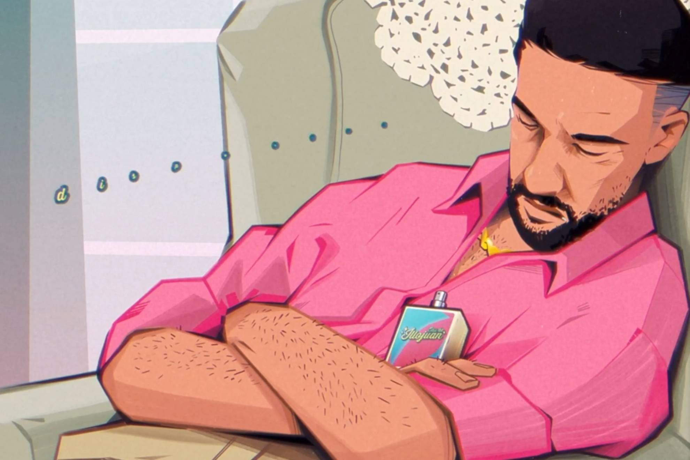
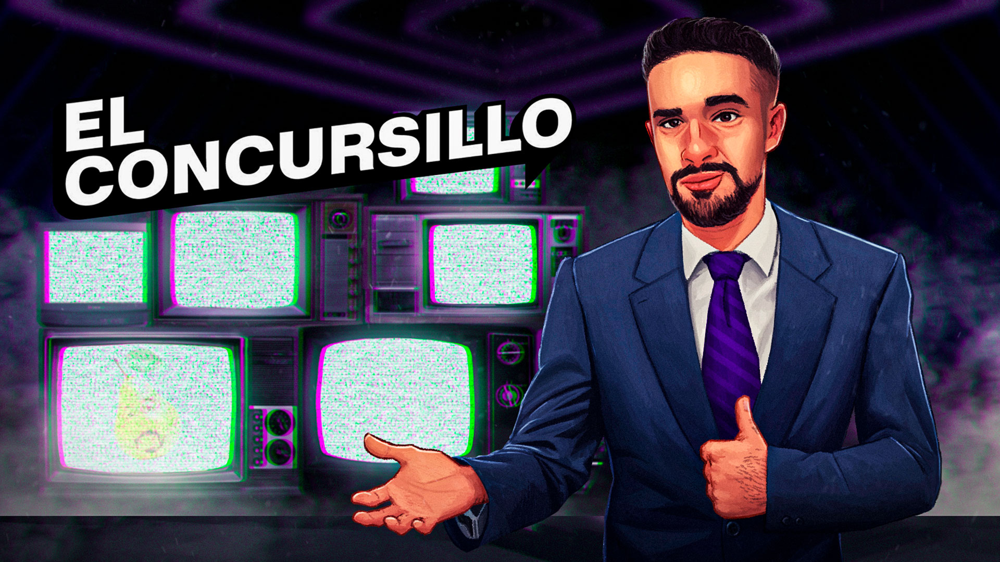
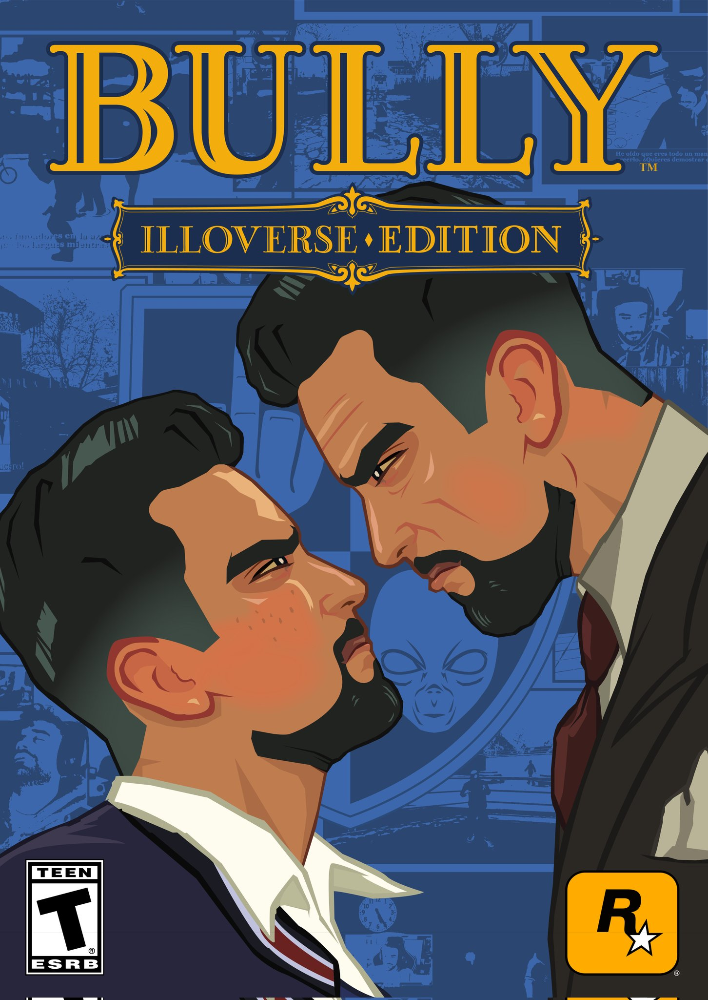
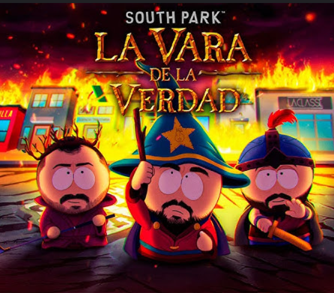

@IlloJuan
Juan Alberto García
18 videos · 496.743 visualizaciones

El Concursillo
4 vídeos · 313.317 visualizaciones

Bully
6 vídeos • 457.643 visualizaciones

South
Park
21 vídeos • 2.354.158 visualizacione
Red Dead
Redemption 2